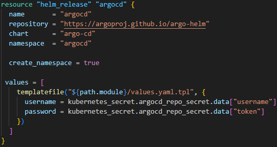
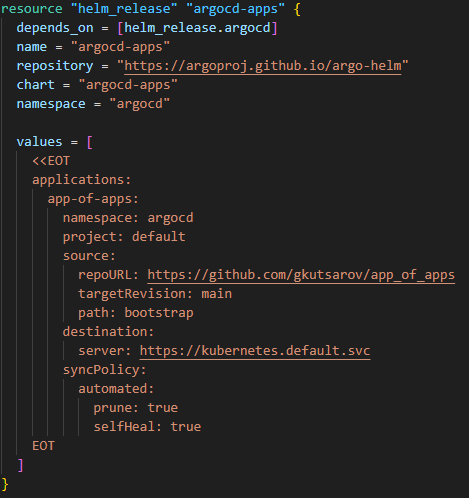

This post explains how we use GitOps continuous delivery tool ArgoCD for Kubernetes (K8S).
ArgoCD ensures that the desired state of our applications matches the actual state in Kubernetes cluster.
Our desired state is our Git repository. Git repository becomes the source of truth for K8s.
More information can be found on the official ArgoCD webpage here
THE PROJECT
To demonstrate the capabilities of ArgoCD I have deployed it using Terraform(IaC) + official helm chart to my EKS cluster in AWS.
First we deploy our ArgoCD with Terraform as our IaC, utilizing the official Helm chart for ArgoCD.
I am dynamically fetching the username and token for my GitHub account which adds my GitHub repository to ArgoCD during installation.
Our next step is to "bootstrap" our cluster a.k.a make use of app of apps pattern.
I use another official ArgoCD Helm chart to setup my ArgoCD to make use of https://github.com/gkutsarov/app_of_apps/bootstrap repository. ArgoCD will use this repository as a source of truth. 
ArgoCD helps greatly with it's declarative approach and version controlled. Application deployment and lifecycle management is automated, auditable, and easy to understand.
Project files and explanations are located in my github repo here
App of Apps repository here